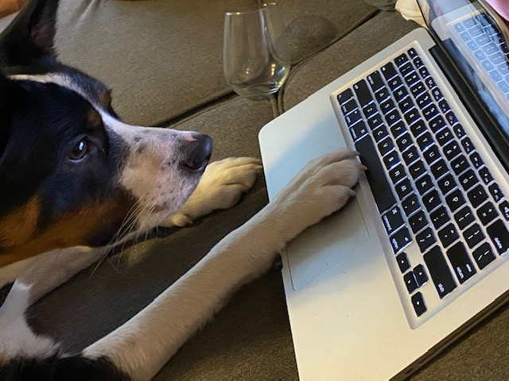

Who we are
Like the batches of wine we currently make we are a small operation. My name is Anthony and I am the chief/only winemaker. I have been making wine for almost four years now. I started making wine in our small 750 square foot apartment, and it was from that apartment that I made 30 gallons of wine for our wedding.
This is where my wife, Lizzi, comes in. She was the one who was some how more excited than I was when I first started making wine, and when I said I would like to make it for our wedding. Now we are attempting to start a small winery together from our house in Puyallup, WA.
While our wines are exclusively made from juice and concentrates, with a bulk of them being fruit wine, we are looking to expand into the traditional "wine from grapes" game, but will probably never stop making our small batches of wine either.
How we got our name
Enough about me, there is a good chance you are on this page because you either want to know where our name came from, or who that cute pup was on the home page! Starting with the pup, whose name is Fitz. Lizzi and I got Fitz at eight weeks old from a family in Tacoma, WA, where we lived at the time. He has been our baby ever since, and has recently been very spoiled by having us home all the time lately. As you can see, he even helped to build this website, or at least he thinks he did.

Fitz is an aussie/collie mix with bits of shelty and akita in him. He has accumulated many names over the past year, but none have been so lasting as Noodle. He got the name Noodle because when he was a very small puppy, like the picture on the home page, he was very "floppy". Some how the analogy "floppy as a cooked noodle" was mentioned, and we never looked back.
He is a big dog now, but when it came time to pick a name for the winery, of course Fitz came to mind. But we didn't think "Fitz" really played well into a name for a winery, so we thought about "Noodle". Alas, this one did not fit either. However, my wife and I being fairly big fans of French wine, and having honeymooned in France, looked up the French word for "Noodle", and voila! Nouille Cellars was born.
Of course we don't just love Fitz though, we are all around dog lovers here at Nouille Cellars. We would love to see pictures of all your dogs, but for our members who have dogs, please feel free to submit your pictures to us. Keep in mind though that any dog pictures submitted are fair game to be made into a wine label in the future. Don't worry though, we will give your dog credit for the inevitably adorable picture!